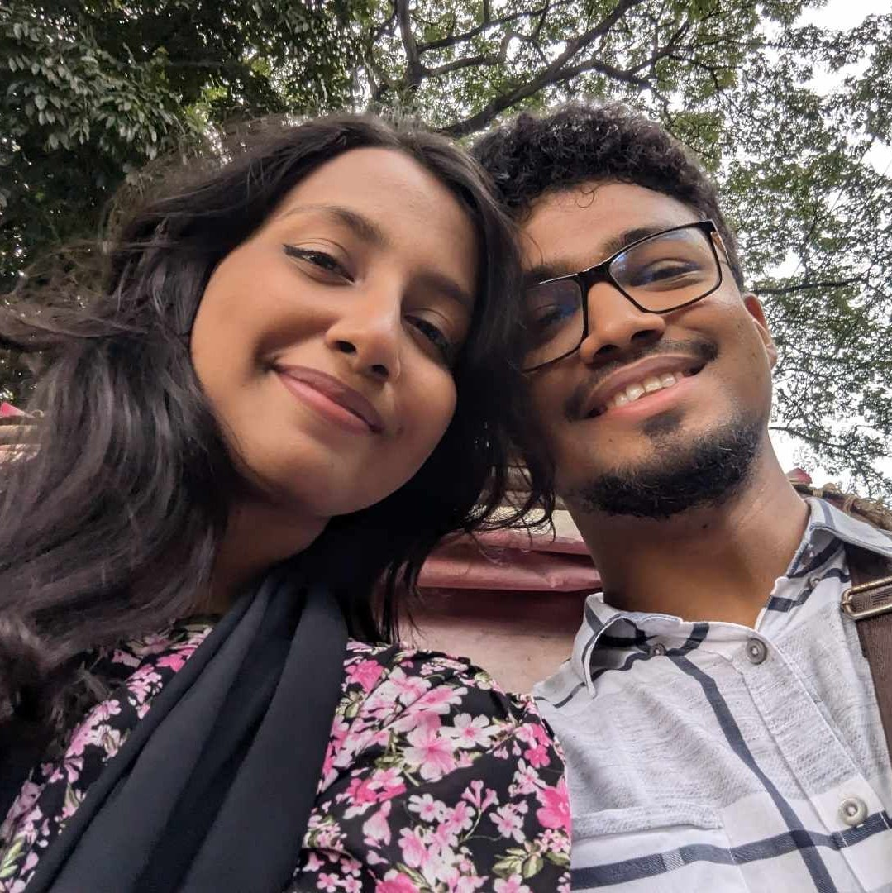
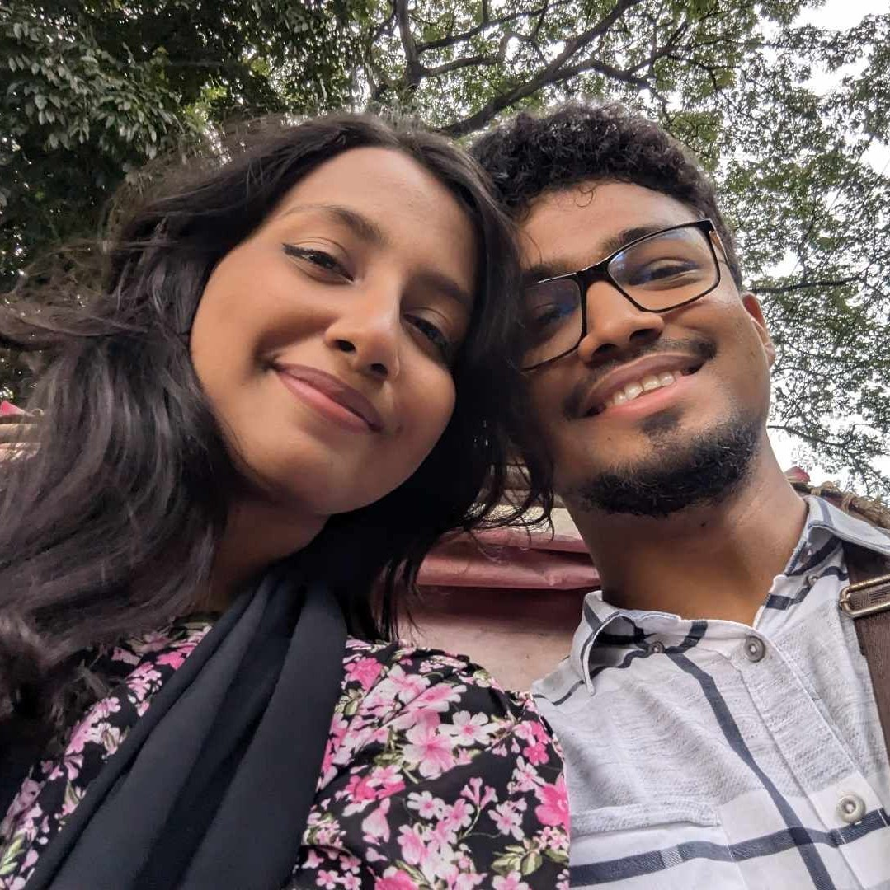

"Dear Ony,
You should know by the time how dumb and clumsy I am.
I really don't know how I manage to blunder.
I know this is the least to send your partner a gmail
just to wish her for the anniversary. This proves that
I'm the worst boyfriend a woman can get. I'm sooo soo
sorry for you that you got someone like me. I wish we
could at least see each other today. Well everything
actually started from class 10 when araf said,
'Mama Ony ekta woman of culture.' From then I started
to take you seriously. I sometimes looked at you being
very curious, my heart wanted to know more about you.
A veryy quick girl who moves 25 thousand times in a second.
After that I wanted to have conversations with you
(without thinking that I am a creep). Even though all
these I never had a scope to talk to you
(ki niye kotha bolbo bhebee!!). Koti koti bochorrr por
when I saw your account of Facebook I smashed the add
friend button. Still I never found a way to approach you.
But you reacted to my posts almost regularly. I used to
notice them like I would get happy damn she liked this she
liked that. Well all these and after that CU exam. Trust
mee my eyes locked into you (not in a creepy way). From
that I used to think about you more frequently. Your
posts/ your reacts to my post this small interaction
used to make me happy. Then the day you got chance at
SUST trust me It made me soo happy for you. I thought jodi
amio SUST e chance paitam amra ghurte partam. We I didn’t
got into SUST but but I was lucky enough to participate
in the water rocket contest. I was really waiting for you.
I told you to come in to morning so that we could hangout more.
But you decided to come afternoon 😡. Finally when
you came with a Cute red dress instantly cought my eyes.
I was very much 😮 after seeing you. I was silent the
whole day knowing okay she is with me. I always thought
you were out of my league. And this made me sad. Then we
started talking. Each and every conversation with you
always made me happy. Then I slowly fall in love with you.
I didn’t even know how it was happening. I became more and
more comfy with you. The day when you said about the other
guy approaching you, my everything collapsed. I felt very
excluded, very pushed away and sad. Then I wanted to escalate
things asap. I didn’t know how but I wanted to. First I
thought when you come back to Dhaka I will tell you
everything but It was also a risk that might be late.
I needed to do something. Then 29th of January came.
I don’t even know how I did that but yeah I had to do it
knowing that there is a 1% chance. I had in mind that it’s
a do or die. Ofc I would try if you don’t accept me. And
before you know it we are finally together. From then it
has been an amazing adventure so far. I know we have to
go a long way in our life. The first meeting to first
dare date to all the late night calls I love everything
about you. You are always in my mind. Whatever I do I only
think about you. I know you deserve more than this. I know
I am the worst boyfriend ever I know. But know that I love
you more than anything. No matter how much I say I love you
it is always less. And I do understand you a lot. I just
keep messing things up (I am sorryyyyy). I sometimes make
you mad Umm no all the time actually but know that I love
you with all my everything. I will keep doing that even if
I die. As we have to go long long way there will be
complications. But I want you to keep trusting me and
believe me whatever I do. I will do everything to make
sure we are together in the future. We will fight everything
together. I will make you my wife I promise babe.
Tons of love for you my sweetheart. I love everything you do
for me. Every single details about you makes me more than happy.
Don’t ever change and promise me that you will be with me
no matter what.
HAPPY ANNIVERSARY BABE.
I LOVE YOU A LOTTTTTT
Yours ever,
SHUVO"


 
